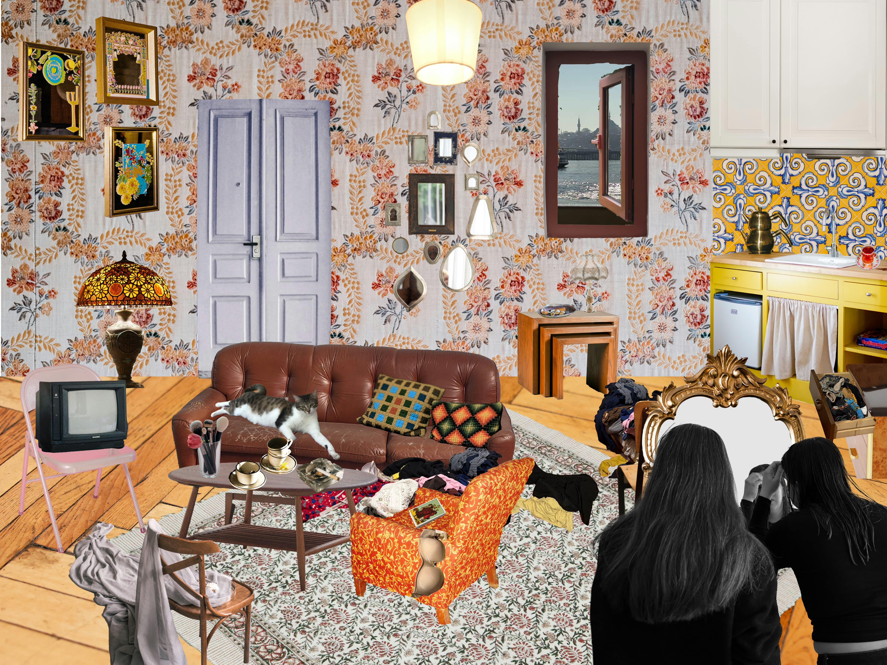

Cycling and Urban Mobility
Bisikletler ve Kentsel Hareketlilik
Visual presentation design for Dr. Müge Özbek's research at TU/e Eindhoven University of Technology[cite: 40].

Graphic Notation of Yemanjá Myth
A narrative exploration of an Afro-Brazilian myth through lines and rhythms[cite: 59]. Exhibited at UNITE Ankara and Çekirdek Eskişehir[cite: 61].

Perriot's Penguin Circus
An artist book merging photographic finds with speculative narratives[cite: 135, 136].

in another messy universe
A project constructing a 'protected universe' away from the seriousness of the outside world. It explores intimate and free moments through collage, capturing how these simple joys can create alternative worlds and possibilities.

The Camera, Grandma & Erzincan
An artist book that constructions a micro-history by merging photographic finds with speculative narratives. This work uses family archives and ASCII art to build a visual scenario between documentary and fiction.

From my Lenses
Daily rituals and visual observations.

Sketches
Visual experiments, drawings, and process-based works.

About

Mehmet Uysal (b. 2001, Istanbul) is a senior student in Psychology and Visual Communication Design at Istanbul Bilgi University[cite: 2, 13].
He analyzes daily life practices through his multidisciplinary background, transforming urban experiences and stories into digital mapping, publications, and interfaces[cite: 4, 5, 6].